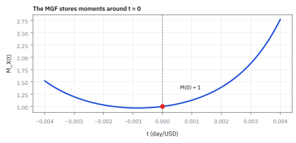
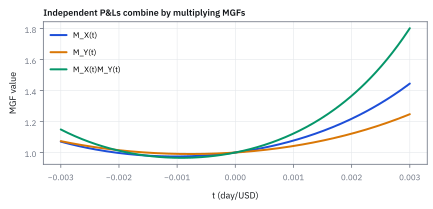
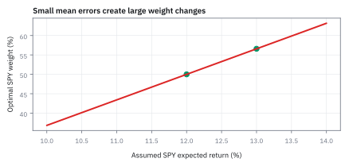

8.5 The Moment Generating Function (MGF)
เครื่องกำเนิด moments ที่ย่อ distribution ให้คำนวณค่าเฉลี่ยและ variance ได้
นักวิเคราะห์บอกว่าผลตอบแทนแบบ log ของหุ้นตัวหนึ่งปีหน้าเฉลี่ย 9% ผันผวน 22% ลงเงิน \$100 วันนี้ ปีหน้าคาดว่าจะมีเงินเท่าไร?
เฉลย: \$112.10 ไม่ใช่ 109.42 median คือ $e^{0.09}=1.0942$ แต่ค่าเฉลี่ยที่คาดไว้หรือ expected value คือ $e^{0.09+0.22^2/2}=e^{0.1142}=1.1210$ ส่วนต่าง 0.0242 คือครึ่งหนึ่งของ σ² ซึ่งหัวข้อนี้จะสร้างออกมาจาก MGF
Moment Generating Function (MGF) คือค่าเฉลี่ยของ $e^{tX}$ ซึ่งเก็บค่าเฉลี่ยของ X, X กำลังสอง, X กำลังสาม ไว้ใน function เดียว ดึงออกมาทีละชั้นด้วย derivative และที่ t = 1 มันคือ expected value ของตัวคูณราคาพอดี งาน quant ใช้มันทุกครั้งที่ต้องหาค่าเฉลี่ยของ exponential
เริ่มจากคำถามที่ตอบผิดกันบ่อยที่สุดข้อหนึ่ง
นักวิเคราะห์บอกว่าผลตอบแทนแบบ log ของหุ้นตัวหนึ่งปีหน้าเฉลี่ย 9% ผันผวน 22% ลงเงิน \$100 วันนี้ ปีหน้าคาดว่าจะมีเงินเท่าไร
คำตอบที่คนตอบคือ \$109.42 ซึ่งมาจาก $e^{0.09}$ คำตอบจริงคือ \$112.10 ส่วนต่าง \$2.68 ไม่ได้มาจากการปัดเลข มันคือครึ่งหนึ่งของ variance ที่โผล่ขึ้นมาเพราะเราเอาค่าเฉลี่ยใส่เข้าไปใน exponential แทนที่จะเอา exponential มาเฉลี่ย
เราต้องการเครื่องมือที่หาค่าเฉลี่ยของ $e^{X}$ ได้ตรง ๆ เครื่องมือนั้นชื่อ Moment Generating Function และของแถมของมันคือมันเก็บค่าเฉลี่ย ความผันผวน และความเอียงของหางไว้ในสูตรเดียว ดึงออกมาทีละชั้นด้วยการหา derivative
ตัวเลขที่จะใช้ฝึกในหัวข้อนี้คือกำไรขาดทุนรายวันที่มีค่าเฉลี่ย \$75 ต่อวัน และความผันผวน \$300 ต่อวัน
เราต้องใช้ MGF ตอบสองคำถาม: derivative ครั้งแรกที่ศูนย์ได้อะไร และ derivative ครั้งที่สองได้เลขเท่าไร จากนั้นตรวจย้อนกลับว่าเลขเหล่านี้คืนความผันผวน 300 USD/day จริงหรือไม่
ศัพท์ที่ใช้ในหัวข้อนี้
- Moment Generating Function (MGF)
- สูตรเดียวที่เก็บค่าเฉลี่ยของ $X,X^2,X^3,\ldots$ ไว้ด้วยกัน เขียนเป็น $M_X(t)=E[e^{tX}]$ แล้วใช้ derivative ที่ $t=0$ ดึงข้อมูลแต่ละชั้นออกมา
- moment
- ค่าเฉลี่ยของกำลังของ random variable เช่น moment แรกคือค่าเฉลี่ยและ moment ที่สองช่วยหา variance
- derivative
- ตัววัดว่า function เปลี่ยนเร็วแค่ไหนเมื่อขยับ input เล็กน้อย ในหัวข้อนี้ใช้ดึง moment จาก MGF ที่จุดศูนย์
- cumulant
- ค่าที่ดึงจาก derivative ของ log MGF ใช้แยกจุดกลาง ความผันผวน และรูปทรงของ distribution
- expected value
- ค่าเฉลี่ยถ่วงโอกาสของ P&L ใช้เป็น first moment และ benchmark กลางของ strategy
- variance
- ค่ากระจายรอบ expected value ใช้เปลี่ยน second raw moment ให้เป็นความเสี่ยงในหน่วย USD²/day²
- standard deviation
- รากที่สองของ variance ใช้รายงานความผันผวนกลับมาในหน่วย USD/day
- random variable
- ตัวเลขที่ outcome ยังไม่รู้แต่มี distribution ใช้แทน daily P&L ที่ MGF transform
- log return
- ln ของอัตราส่วนราคาปลายทางต่อราคาต้นทาง ใช้ใน model เพราะบวกกันข้ามเวลาได้ และเป็นตัวที่สมมติให้แจกแจงแบบระฆังคว่ำ
- median
- median ที่แบ่งผลลัพธ์ครึ่งต่อครึ่ง ใช้บอกผลลัพธ์แบบทั่วไปของราคา ซึ่งต่ำกว่าค่าเฉลี่ยเมื่อหางขวายาว
- Jensen's inequality
- ข้อเท็จจริงว่าค่าเฉลี่ยของ function นูนไม่น้อยกว่า function ของค่าเฉลี่ย ใช้อธิบายว่าทำไมค่าเฉลี่ยของ $e^R$ สูงกว่า $e^{\mathbb E[R]}$
- factor
- ตัวคูณที่อยู่หน้าตัวแปรใน linear expression ใช้สร้าง derivative term และ weighted P&L
- USD
- ดอลลาร์สหรัฐฯ ใช้เป็นหน่วยของ daily P&L ในตัวอย่าง MGF
สัญลักษณ์ที่ใช้ในหัวข้อนี้
| สัญลักษณ์ | ความหมาย | หน่วย |
|---|---|---|
| $X$ | daily P&L random variable | USD/day |
| $t$ | MGF argument | day/USD |
| $M_X(t)$ | MGF ของ $X$ | unitless |
| $M_X^{(k)}(0)$ | derivative order $k$ ที่ศูนย์ | $\text{USD}^k/\text{day}^k$ |
| $R$ | log return รายปี $\ln(S_T/S_0)$ ในตัวอย่างหุ้น | ไม่มีหน่วย ต่อปี |
| $S_0,S_T$ | ราคาวันนี้และราคาปีหน้า | USD |
| $\mu,\sigma^2$ | mean และ variance ของ $X$ | USD/day และ USD²/day² |
ขั้นที่ 1 — ลองกับถุงบัตร 1, 2, 3 ก่อน: สร้างเครื่องมือด้วยมือแล้วกดปุ่ม
ก่อนนิยามอะไร ลองกับบัตรสามใบ: เขียน $e^{tX}$ ของแต่ละใบ เฉลี่ยกัน แล้วหา derivative
หา derivative ของ $e^{2t}$ ได้ $2e^{2t}$: เลข 2 ที่โดดออกมาคือค่าของบัตร พอแทน $t=0$ ทุก $e^{0}=1$ เหลือแค่ค่าบัตรถ่วงน้ำหนักเท่า ๆ กัน คือค่าเฉลี่ย
หา derivative อีกครั้ง เลขโดดออกมาอีกตัว จึงได้ $2^2=4$, $3^2=9$ นั่นคือค่าเฉลี่ยของกำลังสอง เครื่องมือชิ้นเดียวให้ทั้งค่าเฉลี่ย 2 และค่าเฉลี่ยของกำลังสอง $14/3$ โดยไม่ต้องนับใหม่
ขั้นที่ 2 — ที่มาของ MGF จาก Taylor series: ทำไม $e^{tX}$ จึงสร้าง moment ได้
นิยามของ MGF ไม่ได้ถูกตั้งขึ้นมาลอย ๆ แต่สร้างขึ้นมาจาก Taylor series ของ exponential เพื่อทำหน้าที่เป็นคลังเก็บค่า expected value ของกำลังต่าง ๆ $\mathbb{E}[X^n]$ ไว้หน้าตัวคูณ $t^n / n!$
จุดเริ่มต้นมาจาก Taylor series ของ $e^u$ รอบจุดศูนย์ ซึ่งกระจายออกเป็นผลบวกอนันต์ของกำลัง $u$
เมื่อแทน $u = tX$ ตัว random variable $X$ แต่ละกำลังจะถูกผูกติดกับตัวแปรช่วย $t$ ในรูป $(tX)^n / n!$
เมื่อใส่ expected value เราสามารถสลับเครื่องหมาย $\mathbb{E}$ เข้าไปข้างในอนุกรมได้ เพราะอนุกรมนี้มี absolute convergence ในย่านรอบจุดศูนย์
ผลลัพธ์ที่ได้แสดงโครงสร้างที่ชัดเจน: moment ลำดับที่ $n$ คือตัวคูณ coefficient ที่อยู่คู่กับ $t^n / n!$ ดังนั้นเมื่อหา derivative เทียบกับ $t$ จำนวน $n$ ครั้ง แล้วแทน $t = 0$ พจน์อื่นทั้งหมดจะดับไป เหลือเพียง $\mathbb{E}[X^n]$ ออกมาอย่างแม่นยำ
ขั้นที่ 3 — derivative ครั้งแรกให้ค่าเฉลี่ย
การกดปุ่มครั้งแรกแล้วได้ค่าเฉลี่ยดูเหมือนเวทมนตร์ สูตรข้างล่างบอกว่ามันคือกฎลูกโซ่ บวกกับการแทนศูนย์ครั้งเดียว และบอกด้วยว่าขั้นตอนไหนคือขั้นที่ต้องขอเงื่อนไข
การกดปุ่มครั้งเดียวแล้วได้ค่าเฉลี่ยออกมาดูเหมือนเวทมนตร์ แต่มันคือกฎลูกโซ่ล้วน ๆ หา derivative ของ $e^{tX}$ เทียบ $t$ ตัวที่คูณ $t$ อยู่คือ $X$ มันจึงหล่นออกมาข้างหน้า
บรรทัดที่สามถึงสี่สลับลำดับระหว่างการหา derivative กับการเฉลี่ย ทำได้ในช่วงที่เครื่องมือนี้มีค่าจำกัดรอบศูนย์ ซึ่งเป็นเงื่อนไขเดียวที่ขั้นนี้ขอ แล้วแทน $t=0$ ทุก $e^{0}$ กลายเป็น 1 เหลือ $\mathbb{E}[X]$ พอดี
ขั้นที่ 4 — derivative ครั้งที่สองให้ความผันผวน
กดปุ่มอีกครั้งได้ moment ที่สอง แล้วจึงแปลงเป็น variance ด้วยสูตรลัดของหัวข้อ 1.4 ห้าบรรทัดล่างคือใบเสร็จ: ถ้าเครื่องมือถูก มันต้องคืนความผันผวนเดิมที่โจทย์ให้มา
กดปุ่มอีกครั้งด้วยวิธีเดียวกับขั้นที่ 3 คราวนี้กับ $Xe^{tX}$ จึงได้ $X$ หล่นออกมาอีกตัว แทน $t=0$ ก็เหลือค่าเฉลี่ยของกำลังสอง จากนั้นใช้สูตรลัดของ variance ที่สร้างไว้ในหัวข้อ 1.4 ไม่ใช่ของใหม่ เขียนใหม่ให้เห็นว่าทั้งสองก้อนมาจากเครื่องมือชิ้นเดียวกัน
ห้าบรรทัดล่างคือใบเสร็จ เครื่องมือคืน 95,625 ลบกำลังสองของค่าเฉลี่ยได้ 90,000 ถอดรากกลับเป็น \$300 ต่อวันพอดีตามที่โจทย์บอก หน่วยของ variance คือ USD²/day² และของ standard deviation คือ USD/day
ขั้นที่ 5 — พิสูจน์ MGF ของผลรวมตัวแปรอิสระ: เปลี่ยน convolution เป็นผลคูณ
จุดเด่นที่สุดของ MGF คือการเปลี่ยนการคำนวณ convolution integral ของผลรวมตัวแปร ให้กลายเป็นการคูณ function ธรรมดาเมื่อ random variable มี independence ต่อกัน
แทนผลรวม $X+Y$ เข้าไปในเลขชี้กำลัง สมบัติพื้นฐานของเลขยกกำลังทำให้แยกตัวแปรออกเป็นสองก้อนคูณกัน
เงื่อนไข independence ทำให้ expected value ของผลคูณแยกออกเป็นผลคูณของ expected value แต่ละก้อน
ผลลัพธ์จึงยุบลงเป็น $M_X(t) M_Y(t)$ ซึ่งไม่ต้องผ่าน convolution integral ที่ยุ่งยากเลย
หากเป็นผลรวมของ $n$ ตัวแปรที่เหมือนและเป็นอิสระต่อกัน (i.i.d.) MGF ของผลรวมจะเท่ากับ MGF ก้อนเดียวยกกำลัง $n$
ขั้นที่ 6 — ที่มาของ MGF ระฆังคว่ำจากการจัดกำลังสองสมบูรณ์ และคำนวณค่าจริง
ระฆังคว่ำคือ distribution ที่ใช้บ่อยที่สุด เครื่องมือของมันจึงควรมีสูตรปิด และเรามีชิ้นส่วนครบแล้วตั้งแต่บทที่ 1
จุดชี้ขาดของระฆังคว่ำคือการจัดกำลังสองสมบูรณ์ใน integral เลขชี้กำลัง $az - z^2/2$ ถูกแปลงเป็น $-\frac{1}{2}(z-a)^2 + a^2/2$
พจน์ $e^{a^2/2}$ ไม่มีตัวแปร $z$ จึงดึงออกมานอก integral ได้ ส่วน integral ที่เหลือคือพื้นที่ใต้กราฟระฆังคว่ำที่มีค่าเท่ากับหนึ่งพอดี
เมื่อเลื่อนจุดกึ่งกลางเป็น $\mu$ และขยายสเกลด้วย $\sigma$ เราได้สูตรปิด $e^{\mu t + \sigma^2 t^2 / 2}$ อย่างสมบูรณ์
การหา derivative ครั้งแรกและครั้งที่สองคืนค่าค่าเฉลี่ยและ second moment ตรงตามนิยาม
เมื่อแทนตัวเลขจริง $\mu = 75$ และ $\sigma = 300$ จะได้ second moment 95,625 ซึ่งเมื่อหักลบ $75^2$ จะคืนค่า variance $90{,}000 = 300^2$ พอดี
ขั้นที่ 7 — หุ้นจากโจทย์เปิดเรื่อง: ค่าเฉลี่ย 9% ของ log return กลายเป็นราคาโต 12.10%
log return $R\sim N(0.09,\,0.22^2)$ และราคาปีหน้าคือ $S_T=S_0e^{R}$ คำถามคือค่าเฉลี่ยของ $e^R$ ซึ่งคือ MGF ของ R ที่ t = 1 พอดี ใช้สูตรปิดจากขั้นที่ 6 ได้เลย ไม่ต้องอินทิเกรตใหม่
ความผิดพลาดที่พบบ่อยที่สุดคือเอา μ ยัดเข้า exp ตรง ๆ ได้ $e^{0.09}$ แล้วเรียกว่า expected value แต่ค่าเฉลี่ยเดินผ่าน function ที่เป็นเส้นตรงได้เท่านั้น exponential โค้งขึ้น Jensen's inequality จึงบอกว่าค่าเฉลี่ยของ $e^R$ ไม่น้อยกว่า $e^{\mathbb E[R]}$ และเท่ากันเมื่อ σ = 0 เท่านั้น
ตัวเลขสามตัวนี้ถูกทั้งหมดแต่ตอบคนละคำถาม: 9% คือค่าเฉลี่ยของ log return ซึ่งไม่ใช่หน่วยที่บัญชีใช้ 9.42% คือ median ของการโตของราคา เพราะ exp ไม่สลับลำดับ median ของ R จึงกลายเป็น median ของราคา และ 12.10% คือค่าเฉลี่ยที่ถูกหางขวาไม่กี่กรณีลากขึ้น
ขั้นที่ 8 — ใช้ MGF ตัวเดิมที่ t = −1: ฝั่ง short ก็เห็น expected value เป็นบวก
ถ้าถือ short สนใจค่าเฉลี่ยของ $S_0/S_T=e^{-R}$ ซึ่งคือ MGF ที่ t = −1 ไม่ต้องพิสูจน์ใหม่ แล้วลองคูณสองทางเข้าด้วยกัน
(−1)² = +1 พจน์ σ²/2 จึงยังเป็นบวก ผลคูณของสองค่าเฉลี่ยได้ 1.0496 ทั้งที่ผลคูณในทุกกรณีเป็น 1 เป๊ะ ไม่มีอะไรผิด ค่าเฉลี่ยของผลคูณไม่เท่ากับผลคูณของค่าเฉลี่ย ส่วนเกิน 4.96% คือความผันผวนล้วน ๆ
ผลทางปฏิบัติ: ฝั่ง long และฝั่ง short ต่างเห็น expected value เป็นบวกในหน่วยของตัวเอง ทั้งคู่ไม่ได้โกหก และทั้งคู่ไม่ได้กำไรฟรี นี่คือรากของ Siegel's paradox ใน carry trade ค่าเงิน
ตัวอย่างจากตลาด — 9%, 9.42%, 12.10% และกับดักเรื่อง σ²
คำถาม: log return เฉลี่ย 9% ผันผวน 22% ตัวคูณราคาเฉลี่ยที่คาดไว้เท่าไร median เท่าไร และช่องว่างมาจากไหน?
ของที่มี: สูตรปิดของ MGF ระฆังคว่ำจากขั้นที่ 6
1. expected value คือ MGF ที่ t = 1 ได้ exp ของ 0.1142 = 1.1210 ราคาโต 12.10%
2 median คือ exp ของ 0.09 = 1.0942 ราคาโต 9.42%
3 ช่องว่างคือ $\sigma^2/2=0.0242$ ในเลขชี้กำลัง หรือตัวคูณ 1.0245 คิดเป็น 2.68 จุด
เฉลย: ต่อทุน \$100 expected value 112.10 median 109.42
เช็ก 10 วินาที: 0.1142 ต้องมากกว่า 0.09 เสมอ เพราะ σ²/2 เป็นบวก ถ้าคิดออกมาแล้ว expected value ต่ำกว่า median แปลว่าใส่เครื่องหมายผิด
งานจริง: เห็นตัวเลขผลตอบแทนในเอกสารกองทุน ให้ถามก่อนว่าเป็นค่าเฉลี่ยของอะไร ช่องว่าง σ²/2 โตตาม σ² พอร์ตที่ σ = 22% ต่างกันราว 2.4 จุด แต่ที่ σ = 60% ต่างกันถึง 18 จุด สูตรทั้งหมดตั้งบนสมมติฐานว่า R เป็นระฆังคว่ำ ถ้าหางหนากว่านี้ MGF อาจไม่มีเลย เช่น Student-t
กับดัก: ต้องใส่ σ² ไม่ใช่ σ ถ้าเผลอใส่ 0.22 แทน 0.0484 จะได้ $e^{0.09+0.11}=e^{0.20}=1.2214$ คือ 22.1% ผิดไปเกือบเท่าตัว และอย่าใช้สูตรนี้กับตัวแปรที่ไม่ใช่ระฆังคว่ำ เพราะมันมาจากการจัดกำลังสองสมบูรณ์ของ density แบบนี้โดยเฉพาะ
ขั้นที่ 9 — ขยายสู่ Multivariate Normal MGF: vector และ covariance matrix
จากสูตรหนึ่งมิติ เราขยายสู่หลายมิติได้อย่างเป็นธรรมชาติ โดยมองว่าการคูณ inner product $s^\top X$ คือการแปลงเป็นตัวแปรแบบ scalar หนึ่งมิติที่มีค่าเฉลี่ยและ variance ตามโครงสร้าง matrix
สำหรับ Multivariate Normal เราเขียน $X$ ในรูปการแปลงเชิงเส้น $\mu + Lz$ จากตัวแปร Standard Normal อิสระ $Z$
เมื่อนำ vector $s$ มาทำ inner product $s^\top X$ ผลรวมเชิงเส้นของตัวแปร Normal ยังคงเป็น Normal เสมอในหนึ่งมิติ
expected value คือ $s^\top \mu$ และ variance คำนวณผ่าน matrix ได้เป็น $s^\top \Sigma s$
เมื่อนำผลลัพธ์ของระฆังคว่ำหนึ่งมิติมาใช้กับตัวแปร $s^\top X$ ที่จุด $t = 1$ จะได้ MGF หลายมิติ $\exp(s^\top \mu + \frac{1}{2} s^\top \Sigma s)$ ในทันที โดยไม่ต้อง integrate ในหลายมิติโดยตรง
แล้วเอาไปใช้ทำอะไรได้จริงบ้าง
เครื่องมือที่ย่อ distribution ทั้งอันไว้ในสมการเดียว ประหยัดงานได้มากในบทถัดไป
ใช้คำนวณค่าเฉลี่ยและความผันผวนโดยไม่ต้องทำ integral ทุกครั้ง แค่หา derivative แล้วแทนศูนย์
ใช้หาค่าเฉลี่ยของ exponential ซึ่งโผล่มาตลอดในการตั้งราคา และเป็นที่มาของพจน์ครึ่ง variance ในสูตรราคาของหัวข้อ 1.10 และในแบบจำลองราคาเต็มรูปของบทที่ 10
ใช้รวมตัวแปรอิสระหลายตัว เพราะของชิ้นนี้แค่คูณกัน ซึ่งง่ายกว่ารวม distribution ตรง ๆ มาก
Figure 8.5a — MGF เก็บ moment ไว้ตรงไหน

มองที่ $t=0$ ก่อน เส้นเริ่มที่ 1 ความชันตรงนั้นให้ค่าเฉลี่ยส่วนความโค้งให้ค่าเฉลี่ยของ $X^2$
Figure 8.5b — ความชันกับความโค้ง

ซูมใกล้ศูนย์แล้วอ่านสองอย่าง ความชันคือค่าเฉลี่ยความโค้งคือค่าเฉลี่ยของ $X^2$ เมื่อลบค่าเฉลี่ยยกกำลังสองจึงได้ variance
Figure 8.5c — MGF ของผลรวม

ถ้า $X$ กับ $Y$ เป็นอิสระ เส้นของผลรวมสร้างจากการคูณ MGF ของแต่ละตัว ไม่ต้องกลับไปคำนวณ density ของผลรวมใหม่
Figure 8.5d — ตรวจ derivative ใกล้ศูนย์

ลองคำนวณ derivative ด้วยช่วงก้าวเล็กหลายค่า แล้วเทียบกับค่าเฉลี่ยและ moment ที่รู้คำตอบ ถ้าความคลาดเคลื่อนไม่ลดตามรูป เส้นทางคำนวณใน library มีจุดผิด
คำตอบ ตรวจเอง และแปลว่าอะไร
derivative ครั้งแรกที่ศูนย์ต้องคืน $M_X'(0)=75$ USD/day
สำหรับครั้งที่สอง คำนวณทีเดียว: $300^2=90{,}000,\quad 75^2=5{,}625,\quad M_X''(0)=90{,}000+5{,}625=95{,}625$ หน่วย USD²/day²
ตรวจย้อนกลับด้วย $\sqrt{95{,}625-75^2}=300$ USD/day ซึ่งตรงกับโจทย์ ถ้า library คืนเลขอื่น แปลว่าการหา derivative หรือการจัดหน่วยผิด — MGF เป็นลายนิ้วมือ ไม่ใช่ตู้สุ่มเลข
กับดัก: MGF มีอยู่เสมอ
heavy-tailed distributions บางชนิดไม่มี MGF รอบศูนย์ แม้ moments บางลำดับจะมีอยู่ อย่า assume transform finite เพียงเพราะ simulation ให้ตัวเลขออกมา
ที่มาที่ไป: เครื่องมือที่ย่อ distribution ทั้งอันไว้ในสมการเดียว
ปัญหาที่ทำให้เครื่องมือนี้จำเป็นคือ การหาค่าเฉลี่ยของอะไรก็ตามที่ผ่าน function ต้องทำ integral ใหม่ทุกครั้ง ซึ่งน่าเบื่อและผิดพลาดง่าย
แนวคิดคือถ้าเราคำนวณของชิ้นเดียวไว้ล่วงหน้า ที่เก็บข้อมูลของ distribution ไว้ครบ แล้วดึงสิ่งที่ต้องการออกมาทีหลังด้วยการหา derivative ก็จะประหยัดงานได้มาก
ในหัวข้อนี้เราสนใจการใช้งานแบบเดียวเป็นหลัก คือหาค่าเฉลี่ยของ exponential ของตัวแปรที่เป็นระฆังคว่ำ ซึ่งเป็นสิ่งที่โผล่มาตลอดในการตั้งราคา และเป็นที่มาโดยตรงของพจน์ครึ่ง variance ในสูตรราคาหุ้นที่จะเจอในบทที่ 10
ข้อควรระวังคือไม่ใช่ทุก distribution ที่มีเครื่องมือนี้ ตัวที่หางอ้วนมาก ๆ หลายตัวไม่มีเลย
ความเป็นมา: จาก Pierre-Simon Laplace สู่การแปลงโจทย์ convolution เป็นพีชคณิต
ราว ๆ ปี 1810 Pierre-Simon Laplace ได้พัฒนาแนวคิด generating function ซึ่ง Leonhard Euler เคยริเริ่มไว้กับลำดับจำนวนเต็ม นำมาขยายสู่ทฤษฎีความน่าจะเป็นแบบต่อเนื่อง ในหนังสือระดับตำนาน Théorie analytique des probabilités
ปัญหาใหญ่ในยุคนั้นคือ เมื่อนำตัวแปรสองตัวมาบวกกัน การหา distribution ของผลรวม $X+Y$ จำเป็นต้องคำนวณ convolution integral หลายชั้น ซึ่งมีความซับซ้อนสูงและมักหาคำตอบแบบปิดไม่ได้ Laplace สังเกตเห็นว่า หากนำตัวแปรไปวางบนเลขชี้กำลัง $e^{tX}$ สมบัติเลขยกกำลังจะเปลี่ยน การบวกของตัวแปร ให้กลายเป็นผลคูณของ expected value ทันที
แนวคิดนี้แปลงโจทย์ calculus ที่ยากลำบาก ให้กลายเป็นเพียงการคูณพีชคณิตธรรมดา แบบเดียวกับ Laplace transform ในงานวิศวกรรม ต่อมาในต้นศตวรรษที่ 20 Sergei Bernstein และ Ronald Fisher ได้นำ MGF มาใช้วิเคราะห์ moment และ cumulant อย่างกว้างขวาง จนกลายเป็นแกนหลักในการพิสูจน์ Central Limit Theorem (CLT) และทฤษฎีการเงินสมัยใหม่
ข้อจำกัด: วิธีนี้สมมติอะไร และของจริงเป็นอย่างไร
| เรื่อง | วิธีนี้สมมติว่า | ของจริงเป็นอย่างไร | ผลที่ตามมาเวลาใช้งาน |
|---|---|---|---|
| การมีอยู่ | ทุก distribution มีเครื่องมือนี้ | บาง distribution ไม่มีเลย | distribution หางอ้วนที่ใช้จำลองวิกฤติหลายตัวใช้เครื่องมือนี้ไม่ได้ |
| ขอบเขต | ใช้ได้ทุกค่าของตัวแปรช่วย | ใช้ได้เฉพาะช่วงแคบ ๆ รอบศูนย์สำหรับหลายตัว | ต้องตรวจก่อนว่าค่าที่จะใช้อยู่ในช่วงที่ใช้ได้ |
| การตีความ | ค่าที่ได้ตีความทางธุรกิจได้ | มันเป็นเครื่องมือคำนวณล้วน ๆ | อย่าพยายามหาความหมายให้ตัวแปรช่วย มันไม่มี |
แถวแรกคือเหตุผลที่บทเรื่องหางอ้วนต้องใช้เครื่องมืออีกชนิดแทน
โค้ดกดปุ่ม MGF ด้วย numerical derivative และตรวจราคาเฉลี่ย
import numpy as np
from math import exp
M = lambda t: (np.exp(t) + np.exp(2 * t) + np.exp(3 * t)) / 3
h = 1e-5
assert abs((M(h) - M(-h)) / (2 * h) - 2) < 1e-8 and abs((M(h) - 2 * M(0) + M(-h)) / h ** 2 - 14 / 3) < 1e-4
mu, s = 75, 300
MN = lambda t: np.exp(mu * t + 0.5 * s ** 2 * t ** 2)
h = 1e-6
d1 = (MN(h) - MN(-h)) / (2 * h); d2 = (MN(h) - 2 * MN(0) + MN(-h)) / h ** 2
assert abs(d1 - 75) < 1e-4 and abs(d2 / 95_625 - 1) < 1e-3 and abs((d2 - d1 ** 2) / 90_000 - 1) < 1e-3
R_mu, R_s = 0.09, 0.22
assert abs(exp(R_mu + R_s ** 2 / 2) - 1.1210) < 5e-5 and abs(exp(R_mu) - 1.0942) < 5e-5
assert abs(100 * (exp(0.1142) - exp(0.09)) - 2.68) < 5e-3
assert abs(exp(-R_mu + R_s ** 2 / 2) - 0.9363) < 5e-5 and abs(exp(0.1142) * exp(-0.0658) - exp(0.0484)) < 1e-12
rng = np.random.default_rng(8)
R = R_mu + R_s * rng.standard_normal(1_000_000)
assert abs(np.exp(R).mean() - 1.1210) < 2e-3 and abs(np.exp(-R).mean() - 0.9363) < 2e-3
S = np.array([[0.04, 0.01], [0.01, 0.09]]); m = np.array([0.05, 0.08]); sv = np.array([1.0, -0.5])
X = rng.multivariate_normal(m, S, 1_000_000)
assert abs(np.exp(X @ sv).mean() - np.exp(sv @ m + 0.5 * sv @ S @ sv)) < 3e-3โค้ดหา derivative ของ MGF ด้วยตัวเลขแล้วได้ 2 กับ 14/3 ของถุงบัตร และ 75 กับ 95,625 ของ Normal ตรวจว่าราคาเฉลี่ยโต 12.10% ขณะที่ median โต 9.42% ฝั่ง short ก็เห็น 0.9363 และจำลองยืนยัน MGF แบบหลายตัวแปร
สรุปที่ใช้ได้จริง
- MGF คือ $E[e^{tX}]$ และต้องมี $tX$ unitless
- first derivative ที่ศูนย์ให้ mean; second derivative ให้ second raw moment
- variance ได้จาก second raw moment ลบ mean squared
- independent sums เปลี่ยนเป็น product ของ MGFs
- MGF ของระฆังคว่ำที่ t = 1 คือ expected value ของตัวคูณราคา: log return 9% ผันผวน 22% ให้ median 1.0942 แต่ expected value 1.1210 ส่วนต่างคือ σ²/2 = 0.0242 และที่ t = −1 ฝั่ง short ก็ได้ 0.9363 ผลคูณ 1.0496 คือความผันผวนล้วน ๆ